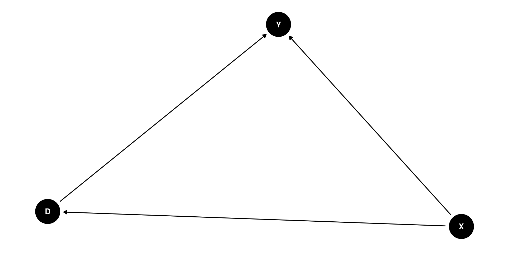
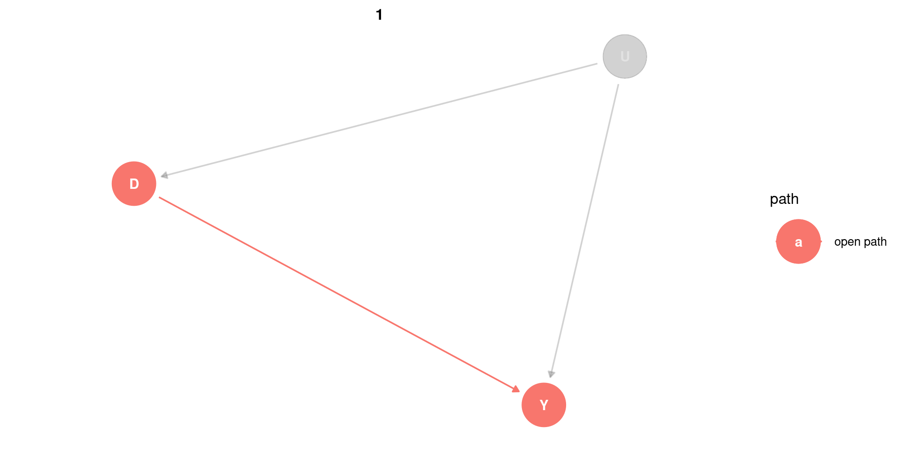

Causality and AI
![]()
Queen’s Managment School (Finance Group)
Royal Statistical Society (Chartership)
Outline
- Causality and AI
- What is Causality
- Importance of Causality
- Causal modelling
- The DAG!
- Selection bias
- Systemic risk example
Causality and AI
We live in the age of AI implementation (Lee 2018)
But causality in machine learning is still an important area of AI research and innovation (Forney and Mueller 2021).
In recent years, the demand for trustworthy AI has highlighted a need for causal reasoning to overcome the limitations of association-based machine learning (Nogueira et al. 2022)
Explainable AI as a discipline is maturing and is being linked to classical causal reasoning in computer science (Zhao and Hastie 2021) and cognitive psychology(Covert, Lundberg, and Lee 2020) .
What is Causality?
- The study of causality is fragmented, with several contributions from such diverse fields as
- philosophy,
- statistics,
- economics,
- epidemiology
- and computer science.
- Today we will look at a causal model using in AI.
What is Causality?

The study of causality aims to answer Why? questions.
In 2011 Pearl won the Turing Award, computer science’s highest honor, for “fundamental contributions to artificial intelligence through the development of a calculus of probabilistic and causal reasoning,”. Book reference (Pearl 2009)
What is Causality?

Causal Inference: the mixtape, Cunningham (2021)
- In economics causality is the leveraging of theory and deep knowledge of institutional details to estimate the impact of events and choices on a given outcome of interest- Cunningham (2021)
No correlation does not mean no causation
correlation does mean causality
- is a almost a cliche and is well understand, no observed correlation is not an indication of no causal relationship
Rethinking Causality
An example: To avoid a recession central bank policy would be to engaging in aggressive open-market operations, buying bonds and pumping liquidity into the economy to avoid a recession.
- If this behaviour is optimal we would not observe any evidence.
Optimising makes everything endogenous
In causal language, humans beings engaging in optimal behaviour are the reason correlations almost never reveal causal relationships
This is because human beings rarely act randomly, but for causal effects to be identified randomness needs to be present.
Economic theory tells us to be suspicious of correlations in observed data, as people’s choices are optimal to the potential outcome.
Thus, choices are endogenous, and correlation between choices and outcomes, in aggregate, rarely represent causality.
Credible research and make believe
- Causality requires a vivid imagination about scientific discovery.
- Identifying causal effects involves assumptions and a belief system doing credible scientific analysis
- Credible research requires following process oriented methods not outcome oriented methods (e.g. confirmation bias, statistical significance, HARKing, etc).
- True scientific methodologies allow us to accept unexpected, sometimes undesirable, answers.
- Unfortunately, business schools incentives do not help us here.
Causality divisions
- Causality is a broad concept and can be subdivided into causal discovery and inference.
Roughly speaking in AI:
- Causal discovery is analysing and creating models that illustrate the relationship inherent in the data.
- In AI Causal Discovery is an algorithmic discipline using observational data (more next time)
- Causal inference is the estimation of the impact of a change in one variable over the outcome of interest.
Scientific causal modeling methodologies
- In general, causal models are imagined mathematical constructs.
- The imagination is guided by
- theory,
- other scientific models,
- conversations with experts,
- your own observations and experiences,
- literature reviews,
- as well as your own intuition and hypothesis.
Scientific causal modeling methodologies
- To such scientific methods are
- Potential Outcomes Models (covered by Archangelo)
- Directed Acyclical Graphs (DAGs) or Causal Graph Modelling
DAGs
- A useful alternative to mathematical algebra although largely ignored in business and economics research.(One exception is Imbens 2019)
- Directed Acyclic Graphs trace their origins to the casual path analysis of Sewell (1929)
- They were revitalised by the work of Turing Award winner Judea Pearl in 2009
I like DAGS
- DAGs run forward in time using graph notation.
- DAGs explain causality in terms of counter-factuals.
- DAGs compare two states of the world:
- What happened when some intervention took place
- What did not happen under some other intervention ; counter-factual
DAGs explained
- It is a model of the real world representing the theoretical state-of-the-art knowledge about the phenomena being studied.
- It is a graphical representation of a chain of causal effects based on unobserved structured process.
- The graph consists of nodes and arrows.
- Nodes are random variables assumed to emanate from a data-generating process
- The arrows capture causal direction.
- Causal effects can be direct \(D \to Y\) or mediated by a third variable \(D \to X\to Y\)
DAGS explained
- DAG require a explicit commitment to a causal effect pathway.
- DAG require a complete commitment to the lack of causal pathway for missing arrows.
- These are strong beliefs.
Simple DAG with confounder X

- In this DAG we have three random variables: X, D, and Y
- The direct path \(D \to Y\) represents the causal effect
- The second path from D to Y \(D \leftarrow X \to Y\) is the backdoor path, which is not causal but cause by a spurious correlation driven by variations in X
- The backdoor path is analogous to the notion of omitted variable bias.
- Another name for a confounder is a non-collider
Rethinking Causality
- Recall that OMB is where a variable is omitted that determines the outcome and the treatment variables, so not controlling for omitted variable bias in regression analysis is like leaving a backdoor open!
- In econometrics a collider would also be called a bad control.
Simple DAG with unobserved confounder

- In this DAG our confounder is unobserved (grey-out)
- The direct path \(D \to Y\) represents the causal effect
- The second path from D to Y \(D \leftarrow U \to Y\) is the backdoor path, but as U is unobserved the backdoor path is open
Rethinking Causality
In this instance, we cannot close the backdoor path as the U is not in the data set.
Colliders explained
- There are 2 paths \(D \to Y\) (causal effect) and \(D \to X \leftarrow Y\) is the backdoor path.
- But notice that the arrows toward X are reversed, here X is called a collider.
Rethinking Causality
X is a collider along this backdoor path because D and the causal effects of Y collide at X. Importantly, colliders close a backdoor path, so should be left alone and not controlled for in a causal inference estimation.
Backdoor critierion
- Backdoor creates systematic noncasual relationships
- Open backdoor paths create omitted variable bias
- The goal is to close these paths and isolate the causal effect \(D \to Y\)
- Closing both involves causal inference research designs and identification strategies (more later)
- We can close these paths using two strategies
- Conditioning on the confounder (subclassification, matching, regression etc)
- Identifying colliders and ignoring them in you strategy
Collider bias
- Unfortunately data set do not come with collider and confounder labels.
- This means we need to revert to theory and prior expert knowledge.
- Inappropriately controlling for a collider variable, by study design or statistical analysis, results in collider bias.
- Controlling for a collider can induce a distorted association between the exposure and outcome, when in fact none exists.
- This bias predominantly occurs in observational studies.
- Because collider bias can be induced by sampling, selection bias can sometimes be considered to be a form of collider bias.
- The diagram below contrasts bias through confounding and collider bias.

Sample selection and collider bias
- Nonrandom sampling has been a known problem in causal inference for decades Heckman (1979)
- What follows is a silly example if sample selection and collider bias.
- Suppose a news report, based on a survey of the top 15% of premier league players, suggested that the attractiveness of players is negative correlated with their footballing talent
- Figure 1 shows the joint distribution of the player attributes beauty and talent
- We can see there is no relationship
- Figure 2 show the sample selected; the top 85th percentile of the linear combination of the distribution of talent and beauty
- This frontier of the data cloud has a negative slope creating a negative correlation between talent and beauty for the sample used in the fake news report.
Collider bias and financial risk modeling
Most current financial models are based on the assumption that risk is created by an outside natural or man-made disaster – what many would call an “act of God” and which economists call an exogenous shock.
That risk within the financial system is created by people interacting with each other.
This is known as endogenous risk, which comes from the ancient Greek words for “growing” and “within”.
The term endogenous risk was first coined by researchers at the LSE Danielsson, Shin, and Zigrand (2013)
Collider bias and financial risk modeling
It is based on the idea that everything that takes place in a financial system is caused by the interaction of all the players in the market, whether financial institutions, traders, regulators or policymakers, who are all pursuing their own objectives.
These agents continually study and react to the financial system, changing its nature in the process. In other words, the financial system is not invariant under observation; by studying it, we change it.
Most of the time, these individual economic agents behave in a way that cancels out shocks. For example, the same event may prompt some to buy an asset and others to sell it.
Collider bias and systemic risk
Systemic risk is realised when this no longer happens because the agents start behaving in a harmonious way; the distress of one agent triggers behaviour that causes distress in other agents, who then further spread trouble.
In other words, individual economic agents react to some particular event, and their actions in turn affect their environment through a network of feedback loops and mechanisms.
Endogenous feedback between the behaviour of market participants can suddenly and unexpectedly create a vicious cycle, causing a crisis.
DAGS: Collider bias, policy actions and system risk
- In the DAG we see that study policy actions to stem systemic risk is challenged by latent volatility feedback loop
- In practice when modelling systemic risk and the effects of policy action, we most consider this collider bias
- Thanks for listen
- Questions?